先看班表最上面的檢查清單
打開「班表」，最上面會列出排班前要設好的項目，系統自己打勾。紅字是一定要設的，沒設好「自動排班」按不下去；黃字建議設；灰字是選填。點「去設定 ›」直接跳到那一頁；營業額那一項是「去填寫 ›」，會移到同一頁上方的營業額欄。
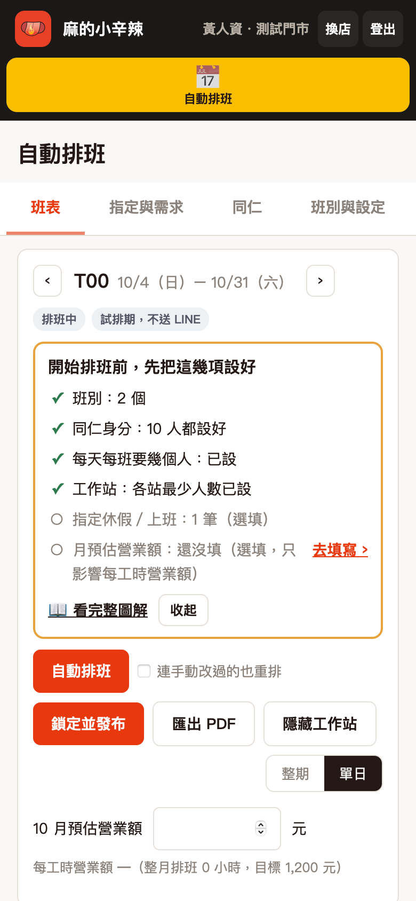
全部設好會收成一行「排班前設定都完成了」
班表是改一格存一格：點格子選好按 套用 就存好了，沒有整頁的儲存鈕。工作站另外有 儲存站別，只按套用不會存到站別。存好不等於同仁看得到，要按 確定班表並傳給同仁，同仁的 LINE 才會出現班表。
第 1 步建班別
到「班別和工作站設定」，把店裡會用到的班都建起來：名稱、上班、下班、休息幾分鐘。例：早班 10:00–19:00、休息 60 分。
- 一個班沒排休息最多 6 小時，超過要排至少 30 分鐘休息才存得進去。
- 不用的班把「使用中」的勾拿掉再按儲存（班別不能刪，已排過的班表才不會亂掉）。
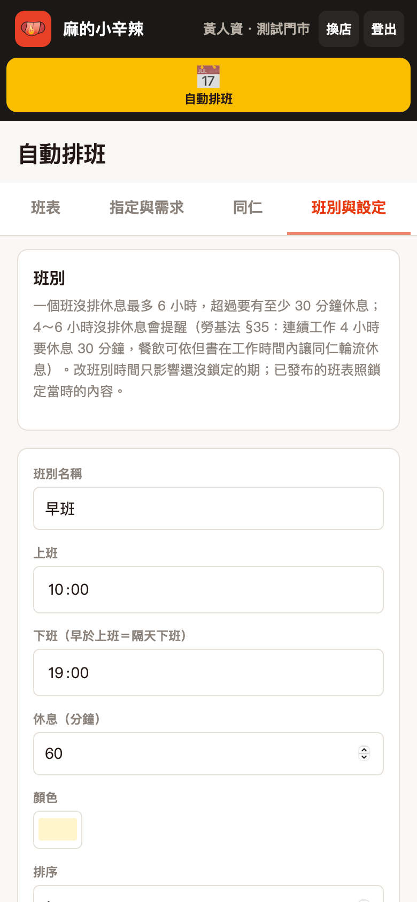
班別和工作站設定
第 2 步設同仁身分
到「同仁」，每個人都要選正職或計時，沒選的人自動排班會排不出來。「每期目標工時」正職沒填就是 160 小時；計時同仁填的是這一期最多排幾小時。
- 「平日只能上的班」：例如只能上晚班的人，勾晚班就好。
- 「假日只能上的班」：六日、國定假日、補假要上不同班的人另外勾（例如平日只上晚班、假日可以上早班）；都不勾＝跟平日一樣。
- 「排班順位」（1 最優先）與「優先班別」：分班時有設優先班別的人先拿那班，兩人都想要同一班時順位前面的先拿；有人設了順位時，某天某班超過最多人數，順位最後的計時同仁那天改休（沒設順位的算最後），改休了哪幾天會列在排完的提醒裡。同一個順位的人，照同仁清單的順序決定。最早那一筆身分設定不能刪，要改內容直接修改它。
- 同一位同仁可以有好幾筆身分設定（例如 11/15 起改備援、改能上的班；正職和計時互換要從某一期的第一天開始）：卡片最上面的選單選一筆來看或改；選「＋ 從某天起改設定」新增一筆，要填「身分從哪天開始」；不要的那筆可以按「刪除這筆」（最早那筆不能刪）；已經有的那筆不能改開始日，要換日期就新增一筆、再刪掉舊的。計時的每期目標工時在期中改時，這期上限照天數比例分段算。
- 「備援」（只限計時）：自動排班先不排他，哪天哪班其他同仁都排不開才叫他補；補了哪幾天會列在提醒清單。
- 有用工作站的店，可以設「預設站別」，排上班時自動帶入。
- 有 LINE 打卡、也開了出勤核定的店，同仁名單從打卡系統帶進來，新同仁請到管理系統新增；沒有打卡系統的店，用同仁頁「新增同仁」裡的備案表單新增。
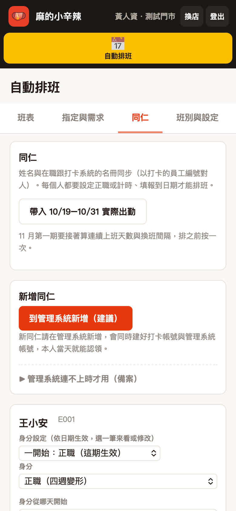
同仁
第 3 步設每天每班要幾個人
到「指定休假和人力需求」，平日、週六、週日各填一組「每班最少幾人、最多幾人」。自動排班會照這個人數排。
遇到活動、國定假日這種特別的日子，選那一天另外調人數，只影響那一天。
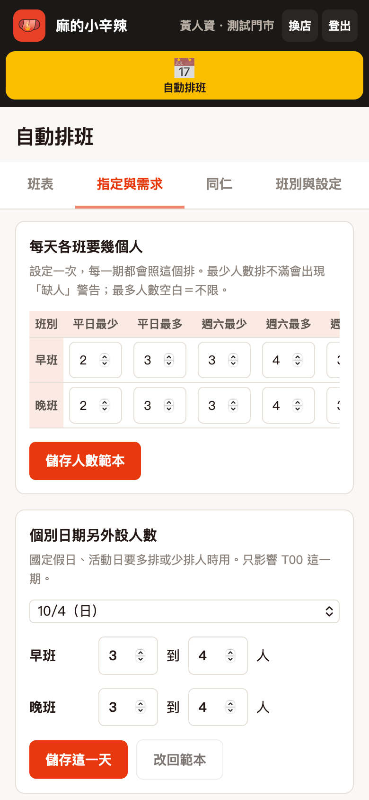
指定休假和人力需求：每班人數
第 4 步先標指定休假、指定上班選填
同仁事先講好要休的日子，在「指定休假、指定上班」選那個人，點日期切換：沒指定 → 休 → 上 → 某個班。自動排班不會動這些格子。
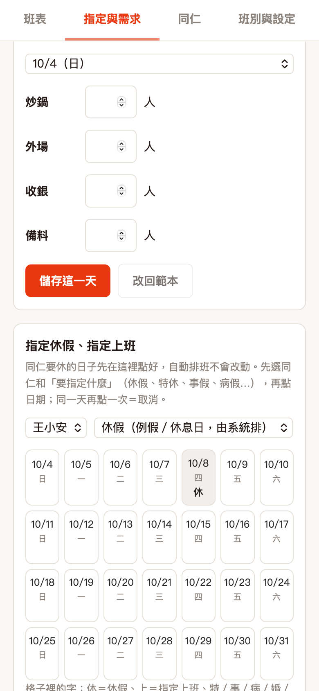
指定休假、指定上班
第 5 步工作站與各站人數有用站別的店
店裡要分炒鍋、外場、收銀這類站別的，先在「班別和工作站設定」建工作站，再到「指定休假和人力需求」填每站最少幾人。沒用站別的店跳過這一步。
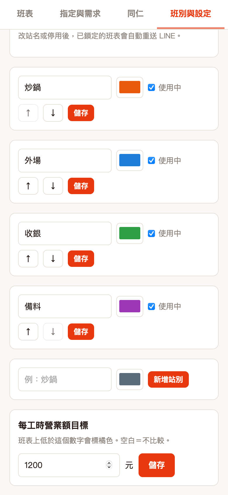
工作站設定
第 6 步按自動排班，看提醒、手動改
回到「班表」按 自動排班。排好後看「提醒」：紅色「要修正」一定要改，才能鎖定；黃色是警告，看過自己判斷。
- 要改哪一格就點那一格，選好按 套用；要改工作站，在同一個框選站別後按 儲存站別。
- 手機預設看單日，點上方日期換天；電腦可以切「整期」看 28 天。
- 再按一次自動排班，預設會保留你手動改過的格子。
- 同一天要上兩個班（例如 A 班＋C 班）：點那一格，第一個選班別，旁邊「＋第二班」再選一個，按 套用，格子會顯示「A＋C」。兩個班時間不能重疊、合起來最多 10 小時；兩班可以各選一個工作站，各班人數各算一人。第二班只能自己加，自動排班不會排，重排也會保留。
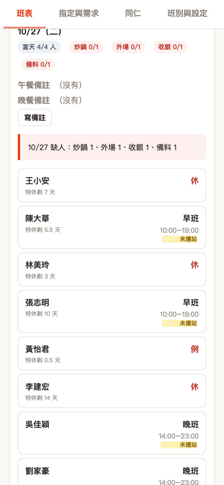
排好的班表（單日檢視）
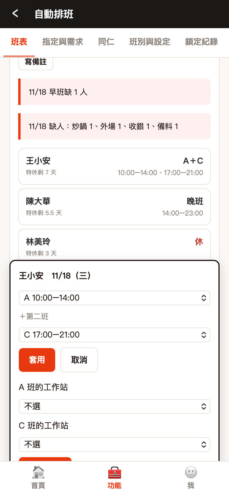
同一天兩個班：選好第一班，再選「＋第二班」
已經在 Excel 排好了：匯入 Excel
- 先按 下載範本：會下載這一期的 Excel（一列一人、一欄一天，已經排的班也在裡面），照這個格式改最不會出錯；第二張「寫法說明」列出每個班別代號。
- 改好後按 匯入 Excel 選檔，先跳出預覽：綠色是新寫入、黃色是會改掉原本的班（下面小字是原本的）、紅色是不會匯入的格子，原因寫在下方。
- 格子可以寫：班別代號（A、A班）、班別名稱、時間（10-19，要跟現有班別一樣）、例、休、休加A（休息日加班）、特休／病假等假別、國定、A+C（一天兩班）。空白格會清空。
- Excel 寫法或姓名對不上時，預覽會請你選它是什麼；選過的這支手機或電腦會記住，下次自動套用。Excel 裡沒有的同仁，班表維持原樣。
- 按 確認匯入 才會寫進班表。已鎖定的期要先解除鎖定。匯入後照平常看提醒、再確定班表並傳給同仁。
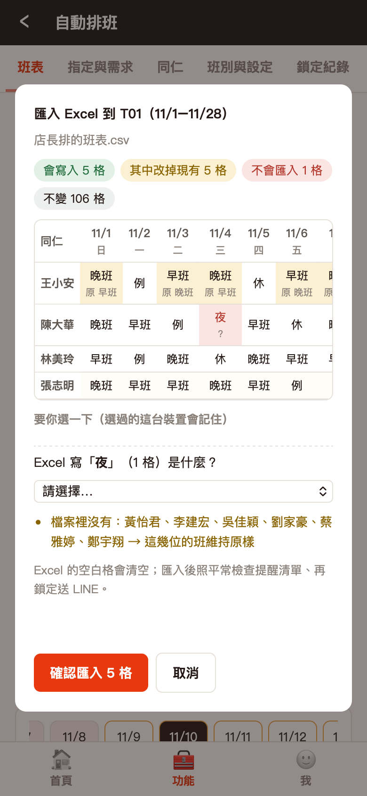
匯入 Excel 的預覽：確認後才寫入
第 7 步寫午餐、晚餐備註選填
某天要提醒全店的事寫在備註，例：「12:00 有 30 人團體訂位」「晚餐提早盤點」，每格最多 60 字。手機按 寫備註，電腦點日期下方的備註格。
同仁在 LINE 出勤班表點那一天就看得到。已鎖定的班表也能直接改，存了會自動重送到 LINE。
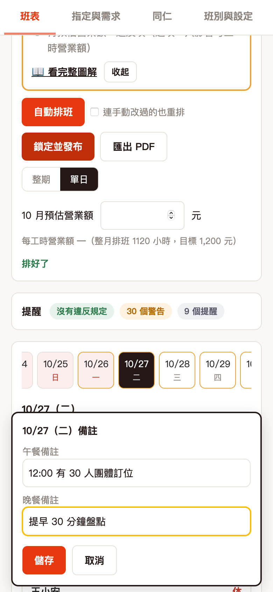
午餐、晚餐備註
第 8 步確定班表並傳給同仁
沒有紅色「要修正」之後，按 確定班表並傳給同仁。同仁在 LINE「鼎兆元打卡」的出勤班表就看得到這一期的班。
- 鎖定後要改班，先按「解除鎖定」，改好再鎖定一次；解除期間同仁暫時看不到這一期。
- 只改工作站或備註不用解除鎖定：鎖定中點格子就能改站別，存了會自動重送到 LINE。
- 「送 LINE 失敗」時按「立即重送」，系統也會每 5 分鐘自動再試。
- 誰在什麼時候鎖定、解除鎖定，都記在頁頂「鎖定紀錄」分頁，可以依期別、動作、操作人查；紀錄永久保留、不能修改。
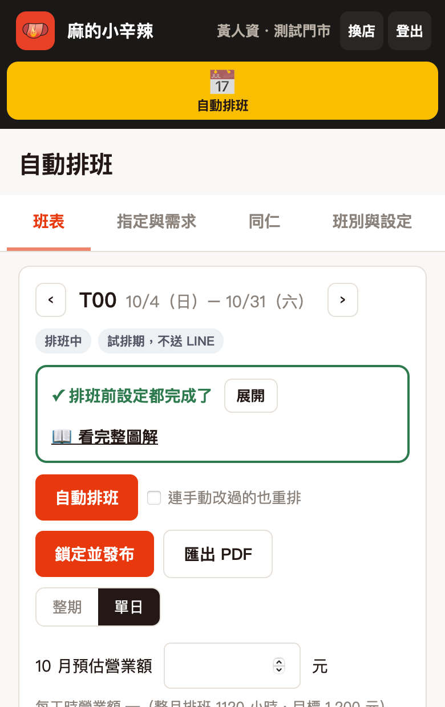
確定班表並傳給同仁
總部同仁：出差、去門市上班總部自填班表
總部同仁在「我的班表」點一天。班別選單除了總部的班，下面還有各門市的班（例如「新竹光復店 C班」）。
- 出差：選總部的班，勾旁邊的「出差」。班表和 LINE 會顯示「出差 早班」，考勤由總部主管核。
- 去門市上班：選那家門市的班，再選那家店的工作站。門市的班表會在最下面「總部支援」列出你，算進當天人數，店長按「自動排班」時那班會少排你這一個；你不用、也不能請店長幫你排。
- 同一天兩段：例如上午出差、晚上去光復上班，第一個選總部的班勾出差，「＋第二班」選門市的班。兩段時間不能重疊、合起來最多 10 小時。
- 門市那段在門市打卡、由店長核：第一次到那家店用 LINE 打卡時，系統會自動幫你加入那家店，之後店長的考勤就會照你排的班預填。
- 總部班別不夠用，可以在「我的班表」下面的「總部班別」自己新增。清單是大家共用的，所有總部同仁都能改。
- 不用的總部班別：還沒排進任何班表的按「刪除」；排過的不能刪，請按「修改」取消「使用中」再儲存，選單就不會再出現，舊班表照樣顯示。
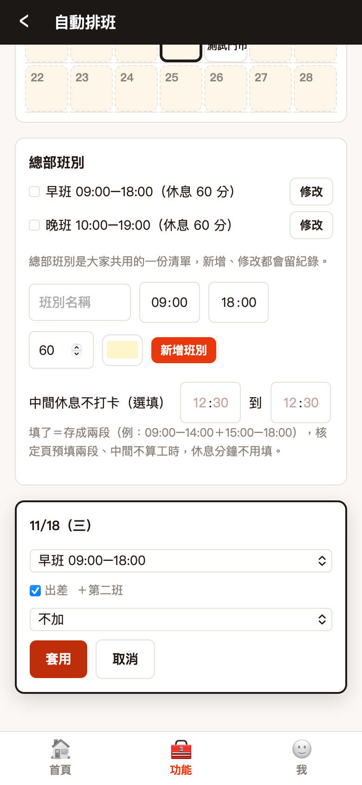
出差：選總部的班，勾「出差」
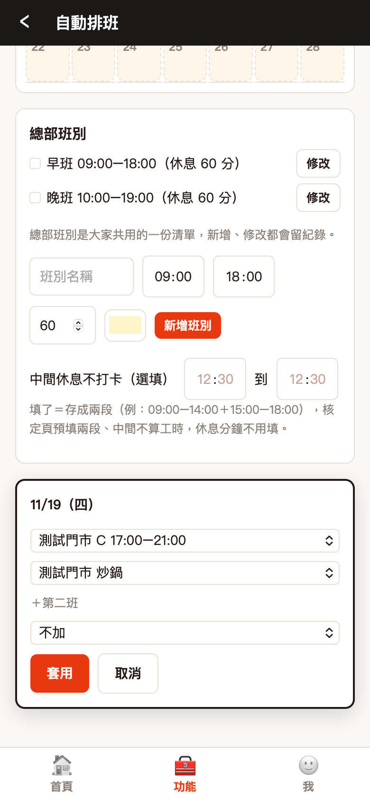
去門市上班：選門市的班，再選那家店的工作站
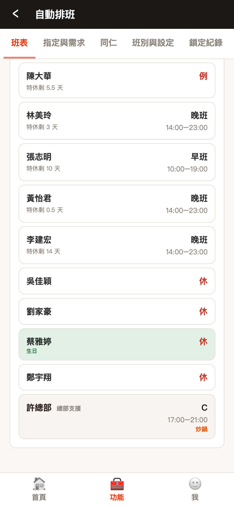
門市班表看到的「總部支援」（店長不能改）
總部班表：誰要排進來排班負責人
總部同仁名單是從打卡名冊自動帶進來的。有些人不需要排總部班，可以在「同仁」分頁把他關掉。
- 誰看得到：排班負責人（主管、人資主管、管理員）。排班管理上方多一個「同仁」分頁，其他人看不到。
- 怎麼用：「同仁」分頁列出總部所有在職同仁，每人右邊一個勾。打勾＝排進總部班表，取消勾＝從總部班表拿掉，按了馬上生效。
- 關掉之後：「部屬班表」不再列他，首頁和 LINE 的「班表空白」提醒也不再提醒他。他自己打開「我的班表」，只會看到「你目前不在總部班表中，請洽排班負責人」，不能填班。
- 已經排的班不會被刪：這只是「顯示」的開關。他的打卡帳號、在職狀態都不動；他之前排好的班還留著，考勤核定照舊拿來比對，LINE 班表也照舊。再把勾打開，班表原樣回來。
- 名冊更新不會把他打開：之後打卡名冊再同步，關掉的人還是關著；新進同仁預設是打開的。
- 離職的同仁不用關：離職日過了就不列在「同仁」分頁，也不會出現在班表上。
門市互相支援同品牌門市
同仁去同品牌的別家門市支援時，由同仁原本門市的店長排。支援的門市不用按同意，請兩店事前先講好。
- 怎麼排：在班表點那一格，班別選單往下找「支援 ○○店」，選對方門市的班和工作站，按「套用」。一天兩段也可以，用「＋第二班」。
- 班別要對方有：選的是對方門市現有的班別，時間跟著對方的設定。要其他時間，請對方先到「班別和工作站設定」新增。
- 原店班表：格子顯示對方門市＋班別（例如「金山C」）。支援的班算進同仁個人工時、一例一休和連續上班天數，不算原店當天人數。
- 支援店班表：最下面「門市支援」列出這位同仁，只能看、不能改，會算進當天人數，按「自動排班」時那班會少排。標「原店還沒鎖定」代表對方還可能調整。
- 支援店已鎖定、原店才改：原店照樣能改，支援店人數自動更新，管理系統首頁會提醒「門市支援有變動」。店長打開那一期班表或再次鎖定後，提醒就消失。
- 自動排班：不會自己排支援，已排好的支援格子會保留，「全部重排」也不動。
- LINE 班表：同仁看到「新竹金山店 C班」。
- 工時比：算支援店。工時、忘打卡單由支援店店長核定；加班、請假、出差單仍回原店審；薪資照舊由原店發。
- 第一次去那家店：班表和人數照樣有；用 LINE 打過卡、加入那家店後，考勤才會照排定的班預填。
- 支援店之前手動排過這個人：原本的格子保留，提醒清單會請你清掉，避免重複算人數。
- 只限同品牌門市，小辛辣和墨竹亭不能互相選。
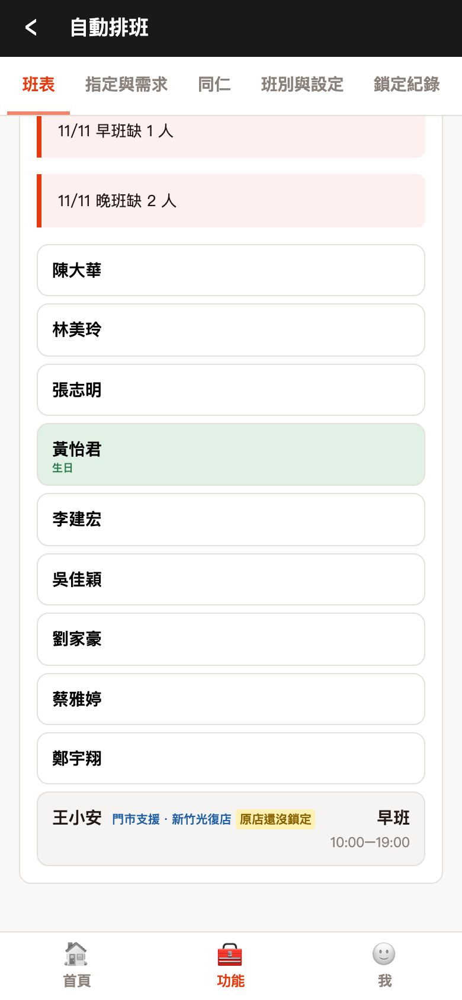
支援店看到的「門市支援」（只能看，不能改）
班表只在主要單位11/29（T02）起
每位同仁只有主要單位（管理系統同仁名單上的單位）那份班表有效。去別家上班，一律由主要單位那邊排「那家店的班」，別家不另外排一份。
- 為什麼：以前同一個人兩家各排一份，LINE 班表、考勤、薪資讀到的可能是不同那份，同仁和店長都搞不清楚要照哪份上班。
- 總部同仁去門市：在總部「我的班表」選那家門市的班（同上面「總部同仁：去門市上班」）。門市班表最下面「總部支援」列出他、算人數。
- 門市同仁去同品牌別家：由原本門市的店長選「支援 ○○店」的班（同上面「門市互相支援」）。
- 在別家的那一列：同仁去過別家打卡，那家的排班名冊會多一列（支援帳號）。系統會自動把它標成「支援・班表在○○」，這一列不能排班、不用設身分、自動排班不排他、不算人數。
- 還留著舊格子：標記之前排過的格子會照樣列出來，提醒清單出現紅字、不能鎖定。點那一格會說明，按「清空」收掉就好。
- LINE 班表：兩家都只會看到主要單位排的那一份，不會再打架。
- 11/28 以前（T01）：已鎖定、已傳 LINE、已核定的班一律不動。
- 主要單位不對（例：其實已調到門市）：請人資到管理系統改同仁的單位，再請管理者調整排班的標記。
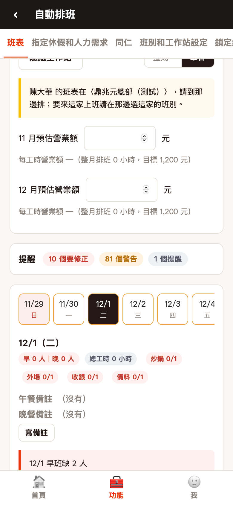
支援帳號：班表上方說明班表在哪一家，這裡只能清空舊格子